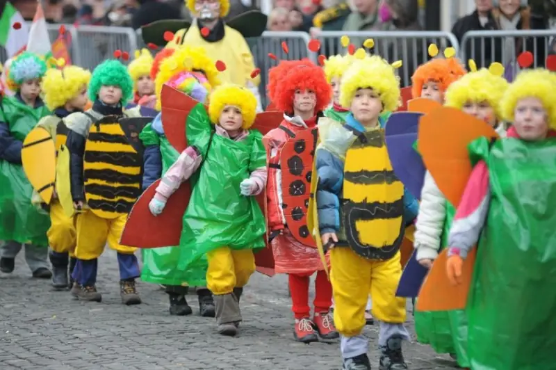
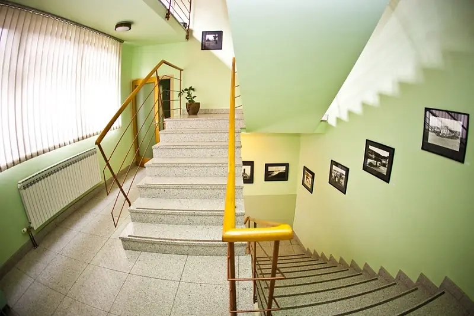
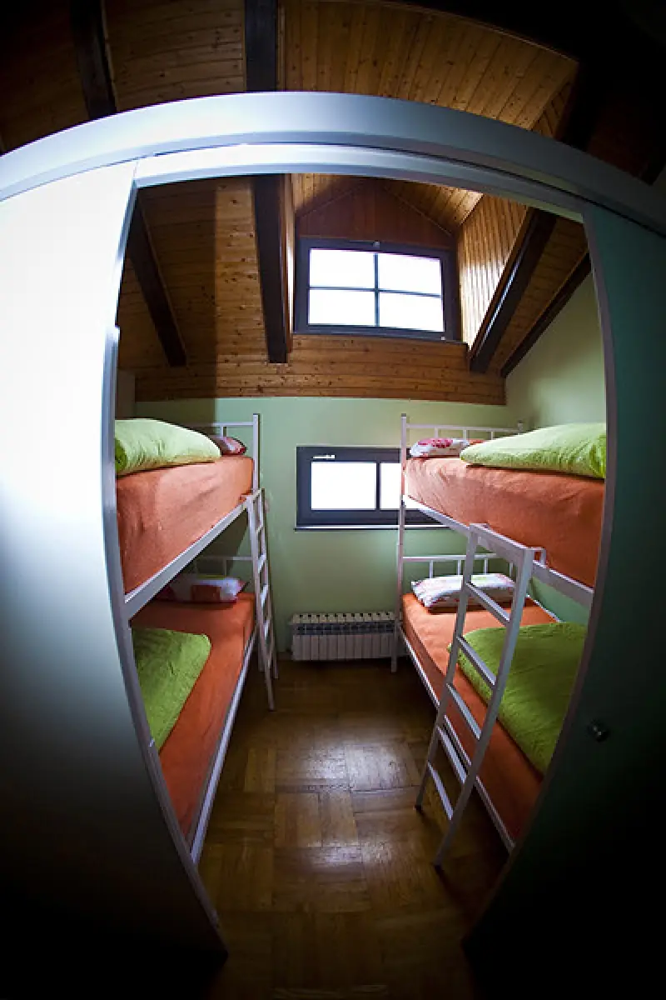
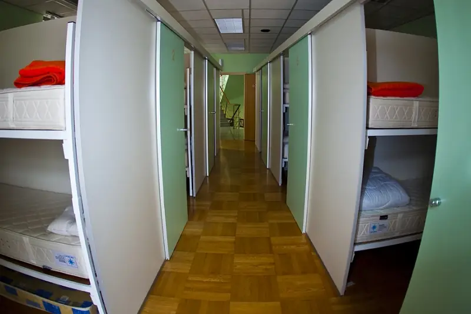
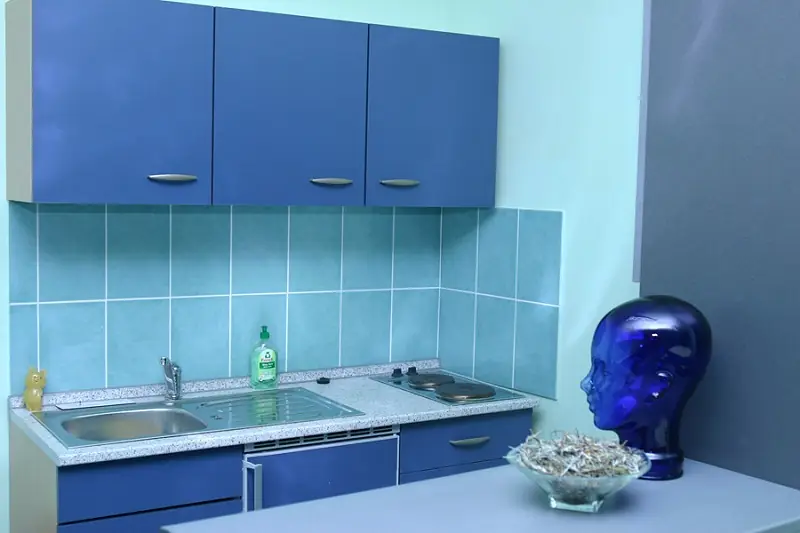
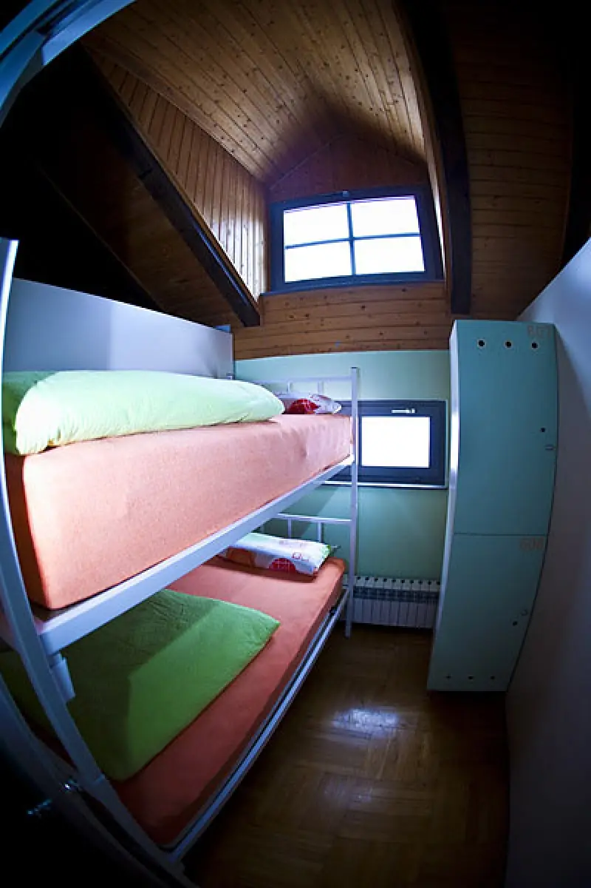
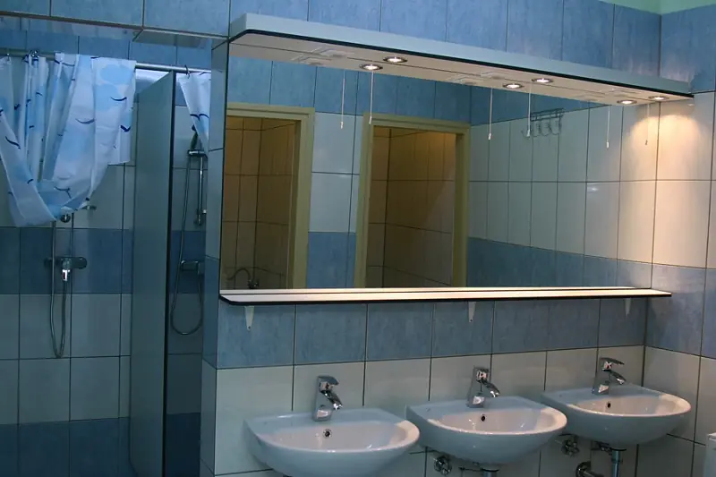
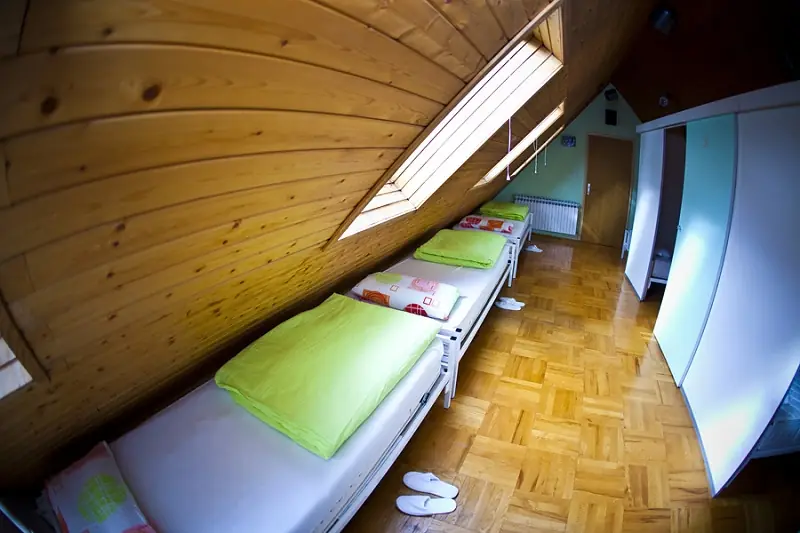

Mali hostel u malom kraljevskom gradu — dvije minute od glavnog trga.
- U centru Samobora
- Od 20 € / noć (sidrena cijena na dan 10.09.2026.: 20 €)
- Wi-Fi · kuhinja · praonica
Dugogodišnje iskustvo u radu s velikim grupama i Erasmus+ projektima.
Smještaj
Sobe i spavaonice
Spavaonice su opremljene novim, visoko kvalitetnim krevetima i ormarima. Hostel također omogućuje bežični pristup internetu. Prvi kat sadrži praonicu rublja, kuhinju i dnevni boravak sa 60 stolica, TV i klima uređaj.
Mjesečni najam ležaja
Nudimo mogućnost najma 1 ležaja za 280,00 € mjesečno.
Sidrena cijena na dan 10.09.2026.: 280,00 € mjesečno
Rezervacije
Nazovite +385 91 3323 091 (0–24 h) ili pišite na
hostel.samobor@gmail.com.
Galerija
Zavirite u hostel







Događanja
Što se događa u Samoboru
Pregled svih važnih događaja u gradu Samoboru i okolici.
Aktivnosti
Što raditi u Samoboru i okolici
Saznajte što sve možete raditi u Samoboru i okolici.
Usluge
Naše usluge
Pored smještaja u hostelu nudimo i najam kombija i kampera te dodatan smještaj u Sobama Medved.
Kontakt
Rezervacije i upiti
Dostupni smo 0–24 h. Javite nam se telefonom ili e-mailom.